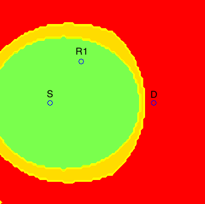
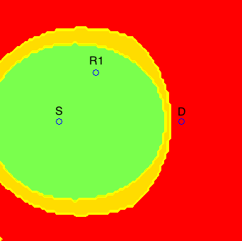

Research Projects
A Practical Overlap-Based Assembler for Long-Read Sequencing Data
Based on theoretical insights into the assembly problem (see research projects below), we have been implementing a practical assembler for long-read sequencing data. Our assembler, called HINGE, strives to achieve optimal repeat resolution by distinguishing repeats that can be resolved given the data from those that cannot. As illustrated in Figure 1a, "hinges" are placed on reads at the boundaries of unbridged repeats. Intuitively, reads can bend around these hinges, which allows unbridged repeats to be naturally collapsed on the graph. As a result, HINGE combines the error resilience of overlap-based methods with the repeat-resolution capabilities of de Bruijn graph assemblers. HINGE was evaluated on the long-read datasets from the NCTC 3000 project (Wellcome Trust Sanger Institute), and shown to produce more finished assemblies than the NCTC manual pipeline (based on the HGAP assembler). Moreover HINGE identified 40 datasets with unresolvable repeats (one example is shown in Figure 1b). In these cases, the HINGE graph captures all assemblies consistent with the data, while other approaches fragment the assembly or resolve the ambiguity arbitrarily.
Figure 1: (a) HINGE identifies the start and end of an unbridged repeat and places hinges at the corresponding reads. When the repeat is unbridged, hinges allow the corresponding segments to collapse in the graph. When a repeat is bridged, no hinge is placed on the reads, and the repeat is resolved; (b) On the NCTC9657 dataset (K. pneumoniae), the HINGE graph allows us to identify a 25 kbp unbridged triple repeat that cannot be resolved given the data (two possible traversals). An additional unbridged repeat is identified but, since the resulting loop admits only one possible traversal (as illustrated by the black arrow), HINGE can resolve such a repeat. The HGAP assembler breaks the assembly at these unbridged repeats, and returns three long contigs. The HINGE graph is colored according to how these contigs are mapped onto it. We notice that contig 1 of the NCTC pipeline incorrectly resolves a triple repeat that is unresolvable given the reads, thus creating a mis-assembly.
A preprint describing the workings of HINGE in detail is available at bioRxiv and the software is available (and being frequently updated) on github.
Fundamental Limits of Genome Assembly
While genome assembly has been a central task in computational biology for decades, only with the recent advent of long-read technologies has the goal of obtaining near-finished assemblies in an automated fashion become within reach. However, along with long reads came several technical issues. All long-read sequencing technologies have lower throughput and are subject to higher error rates than the previous generation of short-read technologies. Therefore, these technological tradeoffs naturally motivate important questions regarding the fundamental performance capabilities of such techonologies. Moreover, from an algorithmic perspective, the de Bruijn graph paradigm, popularized by second-generation sequencing technologies, seems unfit to handle the high error rates and leverage the potential of long reads. But the alternative, overlap-based approaches, are known to lead to NP-hard formulations of the assembly problem. Is there a way out?
Traditional assembly algorithms based on de Bruijn graphs, which were very successful in the context of short-read technologies, are known to be too sensitive to the high error rates of long-read sequencing technologies as a large number of false K-mers are created. In practice, assembly of long reads is usually accomplished by identifying approximate matches between pairs of reads, and constructing a read-overlap graph. In this graph, each read is a node, and two nodes are connected by an edge if they share a "significant" overlap. The true genome thus corresponds to a path that visits every node on the graph, or a Hamiltonian path. As such, the assembly problem becomes NP-hard under most overlap-based formulations, and most of the known algorithmic approaches are heuristic in nature.
Figure 2: (a) Example of de Bruijn graph for sequence ACGCATTCGCGATT with K = 3; and (b) example of read-overlap graph for same sequence with reads of length 5.
In [J7], we show that the NP-hardness of the computational problem can be overcome if we focus on instances of the assembly problem that are feasible from an information-theoretic standpoint. We arrive at this conclusion by first setting the computational complexity issue aside, and instead seeking algorithms that target information limits. In particular, we begin with a basic feasibility question: when does the set of reads contain enough information to allow unambiguous reconstruction of the true sequence? We show that in most instances of the problem where the reads do contain enough information for assembly, the read-overlap graph can be sparsified, giving rise to an Eulerian graph where the problem can be solved in linear time. We conclude that the instances of the assembly problem that are informationally feasible are also efficiently solvable.
At the heart of the assembly problem lies a fundamental information-theoretic question: Given a read length and a coverage depth (i.e., the average number of reads per base), is there enough information in the read data to unambiguously reconstruct the genome? The work by Bresler et al, 2013 initiated the study of this question by characterizing a feasibility curve relating the read length and coverage depth needed to perfectly assemble a genome.
In practice, however, it is often the case that the read data is not sufficiently rich to permit unambiguous reconstruction of the original sequence. While a natural generalization of the perfect assembly formulation to these cases would be to consider a rate-distortion framework, partial assemblies are usually represented in terms of an assembly graph, making the definition of a distortion measure challenging. In [C13], we introduced a distortion measure for assembly graphs that can be understood as the logarithm of the number of Eulerian cycles in the graph, each of which correspond to a candidate assembly that could have generated the observed reads. This allows us to study a "Rate"-Distortion tradeoff, where the rate corresponds to the number of reads and the read length. We also introduce an algorithm for the construction of an assembly graph (a precursor of the HINGE algorithm described above), and analyze its performance in terms of the Length-Distortion curve, showing that it is close to optimal in several real genomes.

Figure 3: The assembly graph in (a) admits two distinct traversals (Green-Blue-Yellow or Green-Yellow-Blue) and, according to the distortion measure proposed in [C13], would have distortion log(2); (b) Lower and upper bounds for the Length-Distortion curve for the S. aureus genome. This curve characterizes the lowest achievable distortion for a given read length L. The upper bounds are computed for several values of the number of reads normalized by the Lander-Waterman number of reads.
Given the framework in Bresler et al, 2013, the impact of read errors on genome assembly can be studied by asking how the information-theoretic requirements captured by these feasibility curves change when there are errors in the reads. To study this question, in [C11] and [J9] we considered a simple error model where errors are erasures that can occur at adversarially chosen positions, up to a limit in the number of erasures per read and per genome position. For this adversarial scenario, we introduce a notion of worst-case typicality, which translates into an error-correction scheme with optimality guarantees in terms of reconstructing the error-free k-spectrum of the genome (i.e., the set of length-k substrings) for the largest possible k. The worst-case nature of our analysis ensures that the proposed error-correction method is robust and allows us to analyze its performance under stochastic error models, and verify that the impact of errors (at least under the model considered) on the information requirements for assembly is mild and the critical read length does not change, as depicted in the figure below.
Figure 4: Sufficiency curves when erasures at a rate p are allowed on the assembled sequence. Reads are assumed to be sampled independently and uniformly at random, and erasures occur independently with probability p.
Wireless Network Information Theory
Recent years have seen a dramatic increase in the wireless data traffic, caused by the success of online media streaming services and the proliferation of smart phones, tablets, and netbooks. Given the scarcity of wireless spectrum, the only way to meet this ever-increasing demand is to exploit a much denser spatial reuse of the spectrum by considering new wireless network architectures; in particular those based on multi-hop and multi-flow paradigms. However, little is known about the fundamental principles that govern the design of communication schemes for multi-hop multi-flow systems, and, in most of these scenarios, an exact characterization of the Shannon capacity is still out of the question. Thus, in this research project, we seek alternative ways to study these networks, such as (i) formulating and studying deterministic models that mimic the behavior of their stochastic counterparts, and (ii) considering the high-SNR capacity approximation provided by a degrees of freedom analysis.
The characterization of the degrees of freedom often leads to a conceptual understanding of fundamental aspects of communication in these networks. This is the case, for instance, of our results in [J6]. By showing that K degrees of freedom can be achieved on a two-hop K x K x K network, we provide an answer to a conceptual question about distributed MIMO systems which can be formulated in an algebraic way as a diagonalization problem, illustrated below.
If the K relays could cooperate (i.e., if they were a single MIMO node), they would apply the linear transformation  in order to diagoanalize the end-to-end network transform. But if the K relays cannot cooperate, how can this end-to-end diagonalization be obtained
in a distributed way?
in order to diagoanalize the end-to-end network transform. But if the K relays cannot cooperate, how can this end-to-end diagonalization be obtained
in a distributed way?
Gaussian models are ubiquitous in data compression and data communication problems. The additive noise experienced by wireless receivers, for instance, is often modeled as a white Gaussian random process. Similarly, but perhaps less intuitively, data sources are also commonly modeled as Gaussian processes. While these models are formally justified in point-to-point setups as the worst-case assumptions, the same was not known to be the case in network setups, and the main reason for these assumptions was analytical tractability. Thus, from a theoretical standpoint, a relevant question is: In what scenarios are these Gaussian models worst-case assumptions? And, from a practical perspective: Can compression and communication schemes be designed under Gaussian assumptions and still be useful in non-Gaussian scenarios?
We answered these questions in the context of data communication in wireless networks [J2] and joint source-channel coding in arbitrary networks [J5]. We proved that the Gaussian distribution is indeed worst-case in these cases, by providing a framework that allows coding schemes designed under Gaussian assumptions to be converted to coding schemes that are robust in the sense that they achieve the same performance under arbitrary statistical assumptions. The figure below illustrates how this is done in network compression problems [J5].

Each source node applies a transformation to its non-Gaussian data source with the purpose of "gaussifying" it. More precisely, we find a sequence of such transformations such that the resulting effective sources converge in distribution to Gaussian, i.e.,
All network nodes will then operate as if the sources were indeed Gaussian, and the destinations will apply the inverse transformations to the reconstructed sequences, to "ungaussify" them. We show that there exist optimal coding schemes for this network for which the above convergence in distribution implies convergence in distortion, i.e.,
Besides settling the aforementioned questions, this result and the result in [J2] allow us to establish connections between the distortion (or capacity) regions of networks under different models. In [C5], we pursued this direction and demonstrated that in two-hop multi-flow wireless networks the capacity under the Gaussian model can be upper bounded by the capacity of the network under a deterministic model.
The study of wireless systems is traditionally performed with simplified models whose goal is to capture the fundamental aspects of communication and provide insights into the design of optimal communication strategies. However, particularly for the case of large wireless relay networks, there are big discrepancies between these theoretical models and the practical systems, which makes the conversion from theory to practice a research effort in itself. Examples of these discrepancies include full duplex versus half duplex antennas, and the assumption of availability of channel state information at the network nodes.
The issues of synchronization between network nodes and energy-efficient communication were addressed in [J3] in the context of a two-relay network. The main motivation for this work are wireless sensor networks, where nodes operate on batteries and the communication of data tends to be bursty, i.e., intermittent. In this scenario, synchronization techniques must be used before every data transmission, and the synchronization energy costs become relevant. In [J3], by approximately characterizing the minimum energy-per-bit required in this asynchronous scenario, we were able to prove the near optimality of training sequences for synchronization, and determine, for a given two-node network, what is the optimal relay selection, as illustrated below.
 
In the figures above, if relay R2 were in a green area, the optimal relay selection (from an energy point of view) would be R1 and R2, if it were in a red area, the optimal relay selection would be only R1, and if it were in a blue area, the optimal relay selection would be only R2. The yellow regions correspond to points where our characterization is not tight enough to determine the optimal relay selection.
This research project comprises many of our ongoing and future research directions. In particular, we have been studying how results on degrees of freedom such as [J1] and [J6] are affected by real-world constraints such as computational complexity and limited channel diversity. For example, the recent work in [Issa] tackles these two issues by characterizing the degrees of freedom achievable on a 2 x 2 x 2 wireless network with linear schemes and no channel diversity. We are currently studying how these ideas can be scaled for the general K x K x K setting.